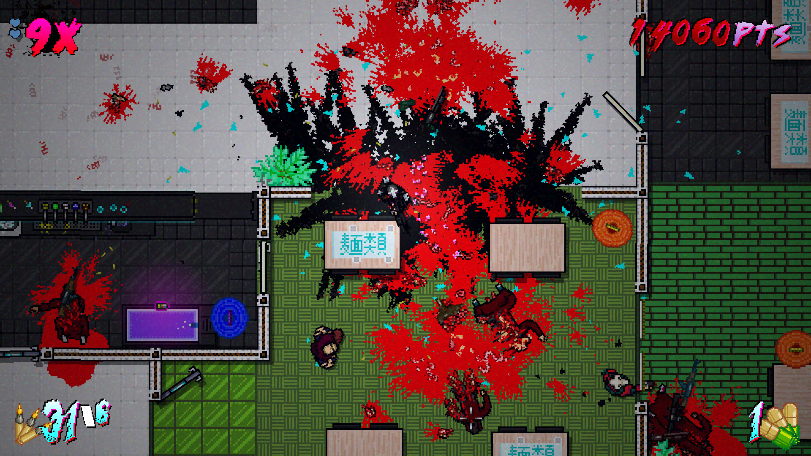
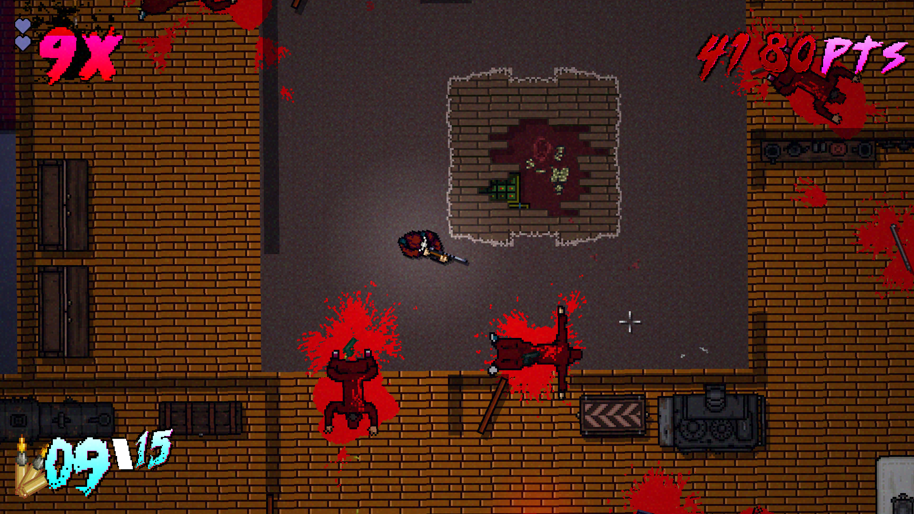
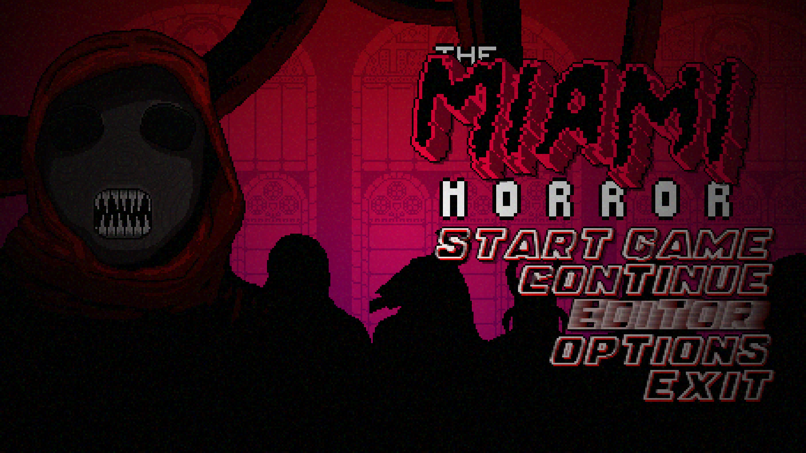
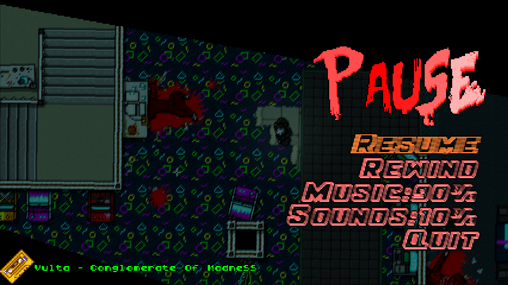
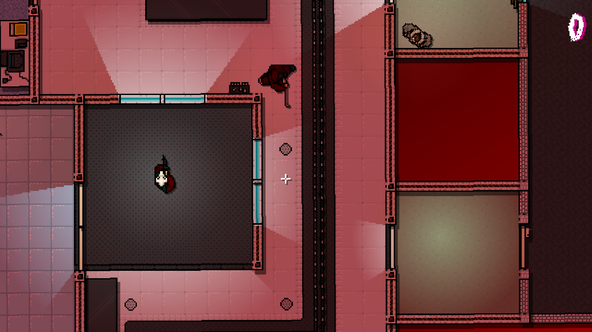

Underneath the usual bustle and violence of Miami, a far worse threat lurks...
A shroud of chilling despair cloaks the night's, and the days are filled with an unseen tension. The whole world is gripped in the clutches of barely repressed primal fear. A cult gathers round a grotesque idol, coldly repeating chants foreign to the human tongue.
Who will stop their horrific summons?
The Miami Horror is a stand-alone mod of Hotline Miami. Unlike the 2nd game, the first Hotline Miami had its source code fully released for the public to alter in the Gamemaker Engine. This project is run and primarily developed by my friend Danny Judas. I am on the team along with six others. I am designing levels for the project, and have worked closely with the team for 2+ years now to decide important game design choices and ideas. This mod is heavily altered from the original source code, with the goal of making it feel as fluid and fast paced as the 2nd Hotline Miami game. As a level designer our main focus is to make atmospheric levels that carry a very deliberate difficulty curve to teach players how to play the game.
Our Heros
Andy is a brand-new acolyte of the cult, an impressionable young man who has fallen in with the wrong crowd. Andy's levels are non-lethal stealth focused, where players will have to skulk through the darkness to get around enemies to accomplish his goals.
The Crusader is a mysterious man hunting down the cult, striking their hideouts and trying to dismantle their operation piece by piece. Crusader comes down from a long lineage of warriors fighting darkness since before recorded history. In the modern age, his tools of the trade are:
The TOZ Over-Under Shotgun capable of sweeping an entire room with two powerful blasts.
The m16c assault rifle High capacity and comes with an under barrel grenade launcher to blow apart walls, doors, or man.
And the Compound Crossbow to silently eliminate enemies at range, by lining your shot up with the laser sight.
Journalist is investigating the cult as its activities in Miami pick up. She claims she is just looking for answers, but there may be more to her than it seems.
Journalist is an expert with a knife and can combat roll to knock down her foes and dodge their attacks. She can also unload the ammunition out of firearms to keep them out of enemy hands and extend her combo meter.
New Features
A huge upside of being able to alter a game's source code is that we can now add improvements and additions to the game's mechanics. To encourage players to play fast and aggressively, we have added in two massive changes. The first is an Anti-Bait script that prevents Ai from being easily manipulated and killed by baiting them into chokepoints. Now when players try this, enemies will back off and shoot faster at a player.
The other is boosts for gaining combos. Every 5x gained in a combo will reward the player with additional health, ammo, or other bonuses. New ways of refreshing your combo will help you keep from dropping it! As The Crusader, reloading will freeze the combo, and picking up ammo refreshes it entirely. While as Journalist you can refresh the combo by disarming enemy weapons. This will help greatly carry your combos from floor to floor.
New Enemy types can also be added, such as the Boar. He wears a Kevlar vest over his cult robes, which makes him immune to bullets. Enough shots will knock him over, but if not dealt with quickly, he will rise back up drawing a sidearm!
The Team
Danny Leads the entire project and is one of the two original members. Danny's written all of the new code for the mod, and done quite a lot of the art.
Yossarian The other original member, Yoss' current focus is writing a complementary short story Miami Horror: The Stuff of Dreams.
Rob I am 1/3rd of the level design team, currently working on the third level for the Crusader.
Brocco In addition of being on the level design team, Broc provides much of the fantastic furniture and prop sprites for the levels.
Jaydon The final level designer, Jaydon is well known in the community for his fan favorite levels like Twitch and Shellshock.
Spy and Asire These two are helping with audio design, by creating new sound effects for the mod.
Image Gallery
    